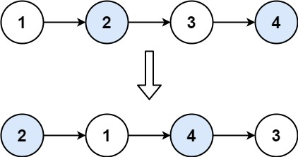

24. 两两交换链表中的节点
哨兵 + 三元组迭代：每轮交换 (prev, a, b) 里的 a、b 并接回 prev，然后 prev 越过换好的两个。
思路
- 哨兵
dummy接在表头前，prev从它出发：交换头两个结点不用特判。 - 循环条件
prev.next != null && prev.next.next != null：后面还成对才继续。 - 三条赋值顺序不能乱：
a.next = b.next（先接住后半）→b.next = a→prev.next = b。 - 一轮结束
prev = a：跳过交换好的两个，继续下一组。
图解
最优解
1class Solution {2 public ListNode swapPairs(ListNode head) {3 // 哨兵挡在表头前：头两个结点也不用特判4 ListNode dummy = new ListNode(0, head);5 ListNode prev = dummy;6 // 每轮处理三元组 (prev, a, b)：交换 a、b 再接回 prev7 while (prev.next != null && prev.next.next != null) {8 ListNode a = prev.next, b = a.next;9 // 三条赋值顺序不能乱：先让 a 接住 b 的后继10 a.next = b.next;11 b.next = a;12 prev.next = b;13 // prev 越过交换好的两个，进入下一轮14 prev = a;15 }16 return dummy.next;17 }18}题目
给你一个链表，两两交换其中相邻的节点，并返回交换后链表的头节点。你必须在不修改节点内部的值的情况下完成本题（即，只能进行节点交换）。
示例 1：

输入：head = [1,2,3,4] 输出：[2,1,4,3]
示例 2：
输入：head = [] 输出：[]
示例 3：
输入：head = [1] 输出：[1]
提示：
- 链表中节点的数目在范围
[0, 100]内 0 <= Node.val <= 100
题面取自力扣当前版本。
数据快照 2026-11-04。题面版权归力扣所有，本站点仅供本人学习使用，请勿对外发布。